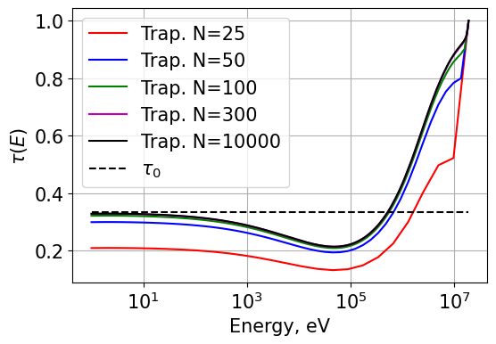
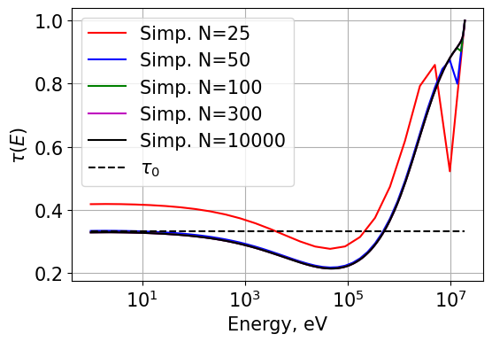

Project 2: Transport Correction Ratios¶
Quick Scrolling¶
Description
Description¶
This project involves the calculation of Transport Correction Ratios for Hydrogen and Deuterium with an implementation for an arbitrary isotope given total and scattering cross sections. The TCR is generally written as:
\[\tau(E) = \frac{\Sigma_{tr}}{\Sigma_t}\]
The TCR is generally important since one wishes to obtain the transport cross section in a homogenized media for use in Diffusion theory. When other methods are difficult, or return questionable results, the TCR can be used to directly obtain diffusion coefficients with knowledge of the total cross section.
For a homogenous medium, one can write:
\[\tau(E) = \left[ 1 + \frac{1}{\phi(E)}\int_{0}^{\infty} dE' \frac{\Sigma_{s1}(E' \rightarrow E)\phi(E')}{\Sigma_t(E')\tau(E')} \right]\]
The subject of this project is therefore to solve for the TCR numerically.
Methodology¶
Flux Solution¶
The flux in an infinite homogenous media can be obtained as:
\[\phi(E) = \frac{S(E)}{\Sigma_t(E)} + \int_{E}^{E / \alpha} dE' \frac{\Sigma_s(E') \phi(E')}{(1-\alpha) \Sigma_t(E) E'}\]
The flux is obtained numerically:
\[\phi(E) = f(E) + \int_{E}^{E / \alpha} dE' K(E,E') \phi(E')\]\[\phi_i = f_i + \sum_i^n w_{ij}K_{ij}\phi_j\]\[\underline{\phi} = \left( \underline{\underline{I}} - \underline{\underline{A}} \right)^{-1} \underline{f}\]\[A_{ij} = w_{ij}K_{ij}\]
The first step is to determine the weights for integration. We start by considering the integration ranges. For an energy \(E_i\), the minimum index j (index associated with E’) can be written as:
\[j_{min} = i\]
- Then the maximum index \(j_{max}\) can be found by considering the maximum possible scattering source energy:
- \[E_{j_{max}} ' = E_i/\alpha\]
- For an energy \(E_i\), the integration is written as:
- \[\phi_i = f_i + \sum_{j=j_{min}}^{j_{max}} w_{j}K_{ij}\phi_j\]
We consider trapezoidal integration. In general, for an integration range from indexes \(j_{min}\) to \(j_{max}\) determined by index i:
\[w_{ij} = \frac{E_1-E_0}{2}; \text{ } j = j_{min}\]\[w_{ij} = \frac{E_N-E_{N-1}}{2}; \text{ } j = j_{max}\]\[w_{ij} = \frac{E_{j+1}-E_{j-1}}{2}; \text{ } j_{min} < j < j_{max}\]\[w_{ij} = 0; \text{otherwise}\]
- The entries of \(\underline{\underline{K}}\) can also be determined as:
- \[K_{ij} = \frac{\Sigma_{s,j}}{(1-\alpha)\Sigma_{t,i}E_j}\]
- Finally, the source term \(f_i\) can be written as:
- \[f_i = \frac{S_i}{\Sigma_{t,i}}\]
- Then the following can be solved for \(\underline{\phi}\):
- \[\underline{\phi} = \left( \underline{\underline{I}} - \underline{\underline{A}} \right)^{-1} \underline{f}\]
Note that in this process, the weights are chosen arbitrarily based on an integration scheme. Later, Simpson’s rule for integration will be implemented and compared.
Transport Correction Ratio Solution¶
After solving for the flux, one can solve for the TCR. The solution for the TCR follows the same logic. Now, the following is solved for \(X(E) = \tau^{-1}(E)\):
\[X(E) = 1 + \int_{E}^{E / \alpha} dE' \frac{\phi(E')\mu(E'\rightarrow E)}{\phi(E)(1-\alpha)E'}X(E)\]
Now we solve:
\[\underline{X}(E) = \left( \underline{\underline{I}} - \underline{\underline{A}} \right)^{-1} \underline{f}\]\[A_{ij} = w_{ij}K_{ij}\]\[f_i = 1\]\[K_{ij} = \frac{\phi_j \mu_{ji}}{\phi_i (1-\alpha)E_j}\]\[\mu_{ij} = \frac{1}{2}(A+1)\sqrt{\frac{E_i}{E_j}} - \frac{1}{2}(A-1)\sqrt{\frac{E_j}{E_i}}\]
After solving for \(X(E)\), one can find \(\tau(E)\) by just inverting \(X(E)\).
Implementation¶
The actual solution of the TCR occurs within transportcorrection.solveFluxAndTRC.
This function calls transportcorrection.infFluxSolver to get the neutron flux followed by transportcorrection.TRCSolver to solve
for the TCR.
Within each, transportcorrection._scatteringWeightGrabber is called to obtain the weight matrix based on the chosen numerical integration scheme.This function simply finds \(j_{max}\) and \(j_{min}\) and then obtains weights in the desired energy range.
A simple function transportcorrection.getNumericalWeights is used by transportcorrection._scatteringWeightGrabber to obtain the geometric weights for a given vector.
Overall, the implementation is generalized as much as possible to allow for an arbitrary numerical integration scheme and an arbitrary isotope mass number.
Running a calculation looks like the following:
# Get energy point data
dataFile = "./database/H1.csv"
data = pd.read_csv(dataFile)
energy = np.array(data['energy'])
# Make a Watt fission spectrum source
src = np.exp(-energy/9.880E+05)*np.sinh((2.249E-06*energy)**0.5)
src = src / src.sum()
# Now solve using the below settings:
energy1,tau_CHI,tau0,flx = solveFluxAndTRC(dataPath=dataFile,
isotopeMass=1.0,
energyN=3000,
lowerE=1,
upperE=19e6,
src=src,
rule='trap',
plotFluxMatrix=True,
plotTaus=True)
Results¶
Source spectrum comparison¶
A comparison of the TCR for H-1 was first compared for a Watt fission spectrum and a point source.

H-2 Implementation¶
A significant part of this project was also generalizing the equations to allow for isotopes with \(A > 1\). Nuclear data for Deuterium was thus used and the TCR was solved for. The nuclear data used for H-2 as well as the TCR are shown below.

|

|
Simpson’s Rule Implementation¶
To better perform the numerical integrations necessary to compute the infinite flux and transport correction ratio, we have implemented Simpson’s rule for numerical integration - specifically the “Composite Simpson’s rule for irregularly spaced data” [1]. Using this rule, we can approximate the integral of a function f(x) as follows:
\[\int_{a}^{b}f(x)dx = \sum_{i=0}^{N/2-1} \frac{h_{2i}+h_{2i+1}}{h_{2i}} \left[ (2-\frac{h_{2i+1}}{h_{2i}})f_{2i} +\frac{(h_{2i}h_{2i+1})^2}{h_{2i}h_{2i+1}}f_{2i+1} + (2-\frac{h_{2i}}{h_{2i+1}})f_{2i+2} \right]\]
- \(h_i\) is simply the integration subdivision width:
- \[h_i = x_i^+ - x_i^-\]
The implementation is also done for odd N - although there is some nuance when N is odd. See Wikipedia for more information.
The implementation for obtaining the weights involves a very simple loop over an input vector \(x\):
# Setup
ng = len(x) # number of energy groups
W_row = np.zeros(ng) # vector of weights
if rule == 'simp':
# Simpsons rule for numerical integration
# A hopefully even number of subinvtervals of width h
h = x[1:] - x[:-1]
N = len(h) # number of subintervals
isOdd = False
if (N % 2) != 0:
# N -= 1 # set N to an even number
isOdd = True
# Now iterate from i = 0 -> N/2-1
for i in range(int(N/2)): # so for 6 subintervals we do (N/2-1) i=0,1,2
coeff = (h[2*i] + h[2*i+1]) / 6
f2i_coeff = 2 - h[2*i+1]/h[2*i]
f2ip1_coeff = (h[2*i]+h[2*i+1])**2 / h[2*i] / h[2*i+1]
f2ip2_coeff = (2 - h[2*i]/h[2*i+1])
W_row[2*i] += f2i_coeff * coeff
W_row[2*i+1] += f2ip1_coeff * coeff
W_row[2*i+2] += f2ip2_coeff * coeff
# Now handle exception if N is odd
if isOdd:
hm1 = h[-2] # width for h[N-1]
hm2 = h[-3] # width for h[N-2]
alpha = (2*hm1**2 + 3*hm1 * hm2) / 6 / (hm2 + hm1)
beta = (hm1**2 + 3*hm1 * hm2) / 6 / hm2
eta = hm1**3 / 6 / hm2 / (hm2 + hm1)
W_row[-1] += alpha
W_row[-2] += beta
W_row[-3] -= eta
The calculation of the TCR is otherwise the exact same as before.
The only modification that needs to be made is within transportcorrection.getNumericalWeights.
Simpson’s Rule - A simple test¶
A simple test was made to verify the implementation of Simpsons rule. The function transportcorrection._test_numerical_integration is built to run a few integrals over
a predetermined polynomial and verify the result with the known integral. The results are found HERE
Simpson’s Rule - Accuracy Comparison¶
We have also compared the accuracy for each integration scheme. Results for different orders of N are plotted below. From the results shown, it is very obvious that Simpson’s rule is much more accurate for a given order of N as even the N=50 results show excellent agreement with the reference solution.
|  |  |
{kind=link}
{kind=link}
Do note that the second to last energy points in the Simpson’s rule plots are calculated using trapezoidal integration due to the fact that three integration points are normally needed. When only two are available, a switching function forces the code to ingegrate using the trapezoid rule.
Finally, a comparison of runtimes is also made. It is clear that the trapezoidal rule is much faster than Simpson’s rule for very high N.
Energy Intervals (N) |
Trapezoid Rule (s) |
Simpson’s Rule (s) |
Trap./Simp |
|---|---|---|---|
25 |
0.00123 |
0.000746 |
1.65 |
50 |
0.00230 |
0.00229 |
1.00 |
100 |
0.0459 |
0.0243 |
1.89 |
300 |
0.202 |
0.129 |
1.57 |
1000 |
0.717 |
0.606 |
1.18 |
3000 |
2.30 |
4.95 |
0.46 |
5000 |
4.69 |
14.8 |
0.32 |
10,000 |
17.4 |
32.4 |
0.54 |
Summary¶
The neutron flux in an infinite homogenous medium problem was solved numerically. Using the flux, the transport correction ratio (TCR) was then obtained numerically. Doing so, the TCR for both H-1 and H-2 was found and plotted/compared. Numerical integration via Simpson’s rule and the standard trapezoidal integration rules were also implemented; runtimes and accuracies of each were compared.
Jupyter Notebook¶
Classes and Objects¶
- Classes and methods developed in this work:
Analytical flux calculator developed in class:
transportcorrection.InfFlux_INCLASSAnalytical TCR calculator developed in class:
transportcorrection.analyticTRC_INCLASSEnergy and XS interpolator:
transportcorrection.energyInterpolationFunction for getting numerical weights for a given integration method:
transportcorrection.getNumericalWeightsFunction for assembling the scattering weight matrix:
transportcorrection._scatteringWeightGrabberFunction for solving the infinite flux problem:
transportcorrection.infFluxSolverFunction for solving for the TCR:
transportcorrection.TRCSolverFunction for solving the flux and then the TCR:
transportcorrection.solveFluxAndTRCFunction for making pretty plots of a 2D matrix:
transportcorrection.plot_matrixFunction for testing numerical integration:
transportcorrection._test_numerical_integration